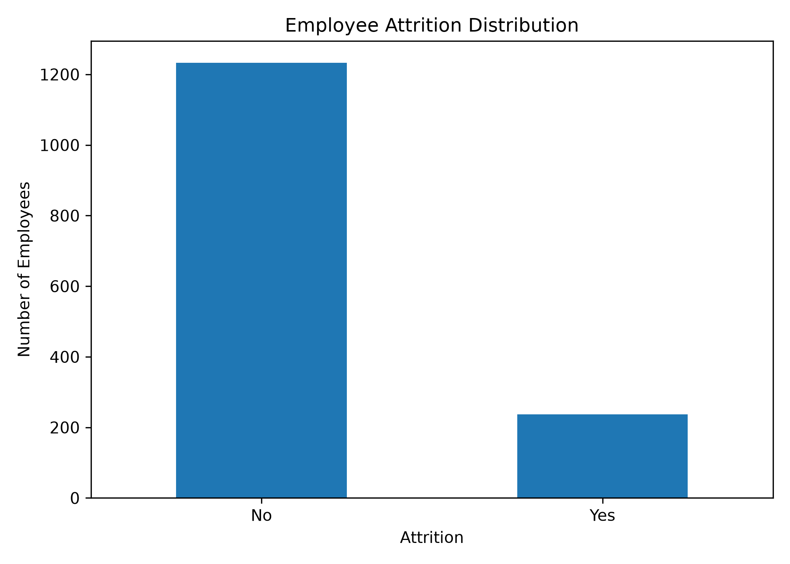
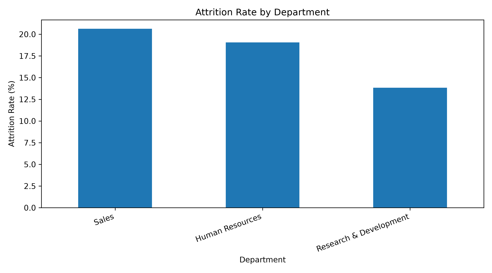
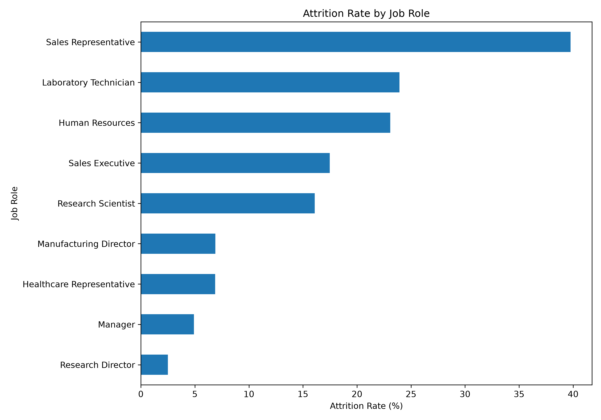
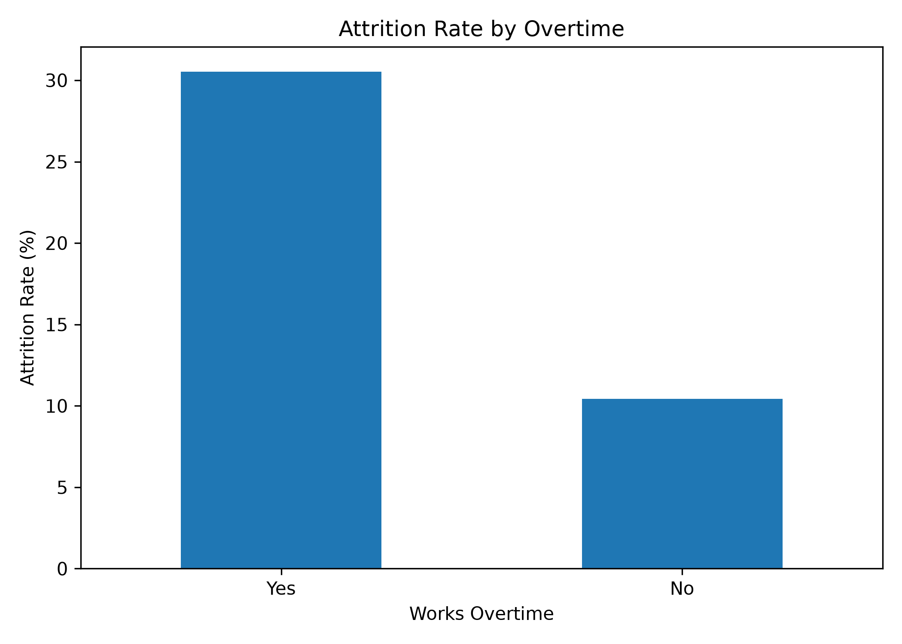
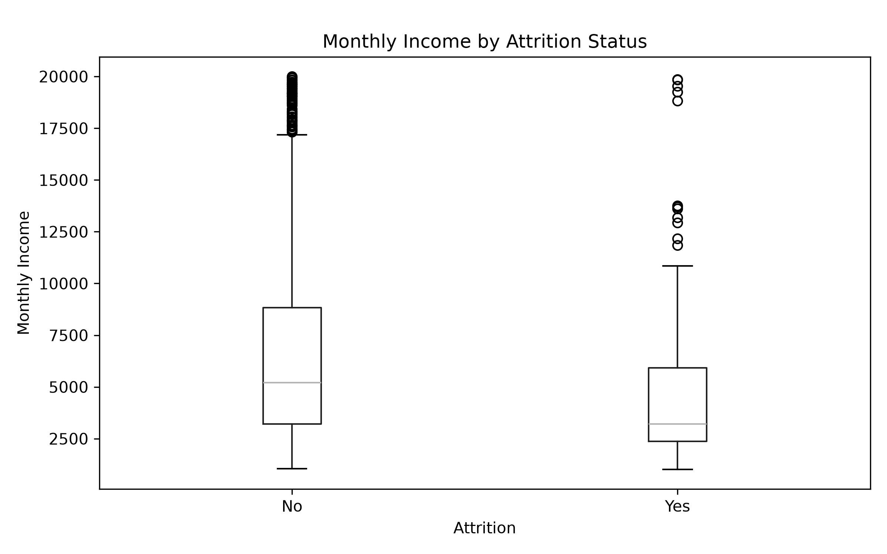

HR Employee Attrition Analysis
Generated on 06 August 2026
1. Executive Summary
This report examines employee attrition using employee demographics, job conditions, compensation, satisfaction, experience and organisational tenure.
2. Dataset Overview
The cleaned dataset contains 1,470 employee records and 34 variables. Each row represents one employee.
| category | variables | description |
|---|---|---|
| Target variable | attrition, attrition_flag | Shows whether an employee left the company. The numerical flag uses 1 for Yes and 0 for No. |
| Employee identification | employee_number | Unique employee identifier. It should not be used as a predictive machine-learning feature. |
| Personal characteristics | age, gender, marital_status, education, education_field, distance_from_home | Basic demographic, education and commuting information. |
| Employment information | department, job_role, job_level, business_travel, job_involvement, over_time | Describes the employee's position and work conditions. |
| Salary and compensation | monthly_income, daily_rate, hourly_rate, monthly_rate, percent_salary_hike, stock_option_level | Contains income, payment-rate and compensation information. |
| Satisfaction and workplace | environment_satisfaction, job_satisfaction, relationship_satisfaction, work_life_balance | Numerical measures related to satisfaction and workplace experience. |
| Experience and tenure | total_working_years, years_at_company, years_in_current_role, years_since_last_promotion, years_with_curr_manager, num_companies_worked | Describes career experience, company tenure, promotion history and manager-related tenure. |
| Training and performance | training_times_last_year, performance_rating | Contains training frequency and employee performance information. |
3. Data Preparation
- Standardised column names using snake_case.
- Checked and removed duplicate records.
- Removed extra spaces from text values.
- Removed constant-value columns.
- Created numerical attrition and overtime flags.
4. Key Findings
- The overall employee attrition rate is 16.12%.
- Sales has the highest department-level attrition rate at 20.63%.
- Sales Representative has the highest job-role attrition rate at 39.76%.
- Employees working overtime have an attrition rate of 30.53%, compared with 10.44% for employees not working overtime.
- The median monthly income is 3,202 for employees who left and 5,204 for employees who stayed.
- Employees who left had spent an average of 5.13 years at the company, compared with 7.37 years for employees who stayed.
- These findings show associations in the dataset and should not be interpreted as proof that one factor directly causes attrition.
5. Attrition by Department
| department | employees | employees_left | attrition_rate |
|---|---|---|---|
| Sales | 446 | 92 | 20.63% |
| Human Resources | 63 | 12 | 19.05% |
| Research & Development | 961 | 133 | 13.84% |
6. Attrition by Job Role
| job_role | employees | employees_left | attrition_rate |
|---|---|---|---|
| Sales Representative | 83 | 33 | 39.76% |
| Laboratory Technician | 259 | 62 | 23.94% |
| Human Resources | 52 | 12 | 23.08% |
| Sales Executive | 326 | 57 | 17.48% |
| Research Scientist | 292 | 47 | 16.10% |
| Manufacturing Director | 145 | 10 | 6.90% |
| Healthcare Representative | 131 | 9 | 6.87% |
| Manager | 102 | 5 | 4.90% |
| Research Director | 80 | 2 | 2.50% |
7. Visual Analysis

Comparison of employees who stayed and employees who left.

Percentage of employees leaving within each department.

Comparison of attrition rates across different job roles.

Comparison between employees who work overtime and those who do not.

Distribution of monthly income for employees who stayed and left.
8. Conclusion
The analysis identifies meaningful differences in attrition across departments, job roles, overtime conditions, employee income and organisational tenure. These findings can support further investigation and more targeted retention strategies.
9. Limitations
- The results show statistical relationships and do not establish direct causation.
- The data does not contain exit-interview comments or qualitative employee feedback.
- Some numerical category definitions are not included in the original CSV.
- The target variable is imbalanced because more employees stayed than left.